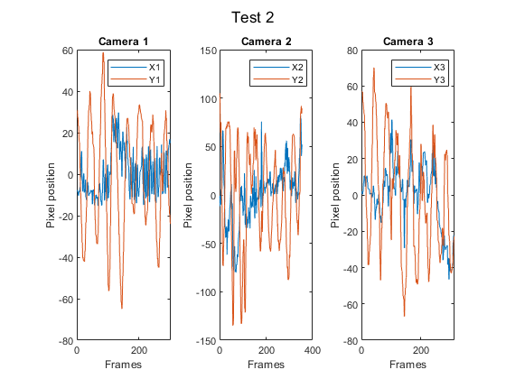
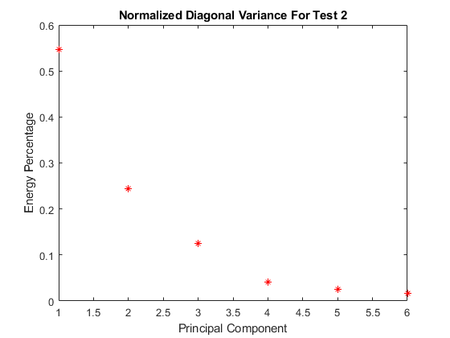
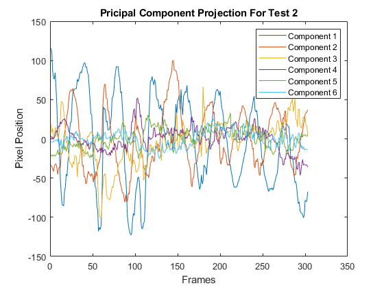

Contents
clc; clear all; close all
Load test 2 data
load('cam1_2.mat')
load('cam2_2.mat')
load('cam3_2.mat')
Obtain the x and y variable data points
numFrames12 = size(vidFrames1_2, 4);
numFrames22 = size(vidFrames2_2, 4);
numFrames32 = size(vidFrames3_2, 4);
x12 = zeros(numFrames12, 1);
y12 = x12;
bottom = 410;
top = 200;
left = 330;
right = 420;
for i = 1 : numFrames12
X12 = double(rgb2gray(vidFrames1_2(:, :, :, i)));
X12(:, 1:left) = 0;
X12(:, right:end) = 0;
X12(1:top, :) = 0;
X12(bottom:end, :) = 0;
[M, I] = max(max(X12));
[row, col] = find(X12 >= 0.9*M);
x12(i) = mean(col);
y12(i) = mean(row);
end
x12 = x12 - mean(x12);
y12 = y12 - mean(y12);
[M, I] = max(y12(1:50));
x12 = x12(I:end);
y12 = y12(I:end);
figure(1)
set(gca, 'FontSize', 15)
sgtitle('Test 2');
subplot(1, 3, 1)
plot(x12);
hold on;
plot(y12);
legend('X1', 'Y1');
title('Camera 1');
xlabel('Frames');
ylabel('Pixel position');
x22 = zeros(numFrames22, 1);
y22 = x22;
bottom = 370;
top = 80;
left = 210;
right = 390;
for i = 1 : numFrames22
X22 = double(rgb2gray(vidFrames2_2(:, :, :, i)));
X22(:, 1:left) = 0;
X22(:, right:end) = 0;
X22(1:top, :) = 0;
X22(bottom:end, :) = 0;
[M, I] = max(max(X22));
[row, col] = find(X22 >= 0.95*M);
x22(i) = mean(col);
y22(i) = mean(row);
end
x22 = x22 - mean(x22);
y22 = y22 - mean(y22);
[M, I] = max(y22(1:50));
x22 = x22(I:end);
y22 = y22(I:end);
subplot(1, 3, 2)
plot(x22);
hold on;
plot(y22);
legend('X2', 'Y2');
title('Camera 2');
xlabel('Frames');
ylabel('Pixel position');
x32 = zeros(numFrames32, 1);
y32 = x32;
bottom = 320;
top = 200;
left = 250;
right = 500;
for i = 1 : numFrames32
X32 = double(rgb2gray(vidFrames3_2(:, :, :, i)));
X32(:, 1:left) = 0;
X32(:, right:end) = 0;
X32(1:top, :) = 0;
X32(bottom:end, :) = 0;
[M, I] = max(max(X32));
[row, col] = find(X32 >= 0.9*M);
y32(i) = mean(col);
x32(i) = mean(row);
end
x32 = x32 - mean(x32);
y32 = y32 - mean(y32);
[M, I] = max(y32(1:50));
x32 = x32(I:end);
y32 = y32(I:end);
subplot(1, 3, 3)
plot(x32);
hold on;
plot(y32);
legend('X3', 'Y3');
title('Camera 3');
xlabel('Frames');
ylabel('Pixel position');
saveas(gcf, 'Position_Test2.jpg');

Reshape data
n = min([length(y12), length(y22), length(y32)]);
X = [x12(1:n)'; y12(1:n)'; x22(1:n)'; y22(1:n)'; x32(1:n)'; y32(1:n)'];
[U, S, V] = svd(X/sqrt(n - 1), 'econ');
lambda = diag(S).^2;
Y = U'*X;
figure(2)
set(gca, 'FontSize', 10)
lambdaSum = sum(lambda);
plot(lambda./lambdaSum, 'r*');
title('Normalized Diagonal Variance For Test 2');
xlabel('Principal Component');
ylabel('Energy Percentage');
saveas(gcf, 'Variance_Test2.jpg');
figure(3)
set(gca, 'FontSize', 10)
plot(Y(1, :));
hold on;
plot(Y(2, :));
plot(Y(3, :));
plot(Y(4, :));
plot(Y(5, :));
plot(Y(6, :));
legend('Component 1', 'Component 2', 'Component 3', 'Component 4', 'Component 5', 'Component 6');
title('Pricipal Component Projection For Test 2');
xlabel('Frames');
ylabel('Pixel Position');
saveas(gcf, 'Projection_Test2.jpg');
 